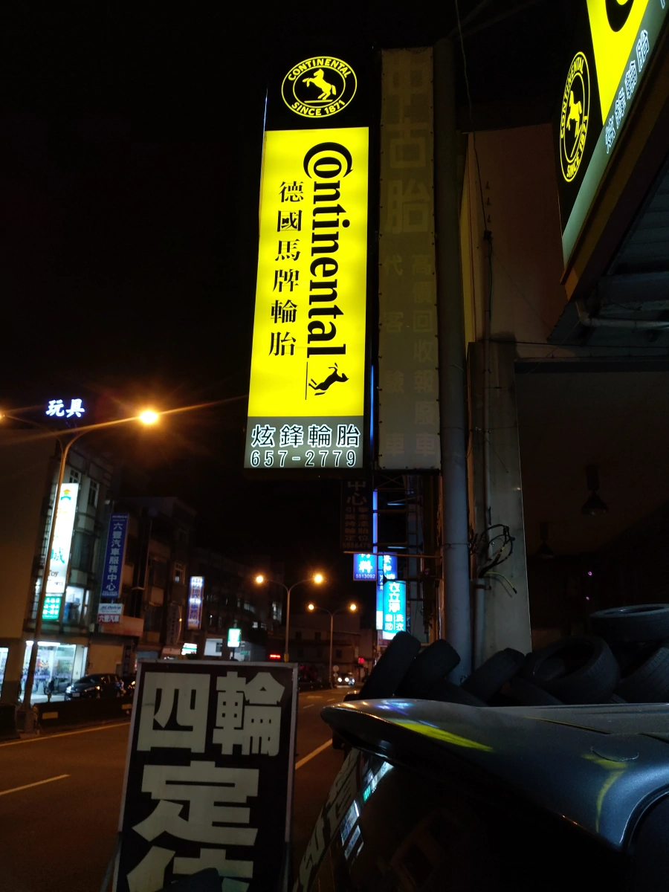
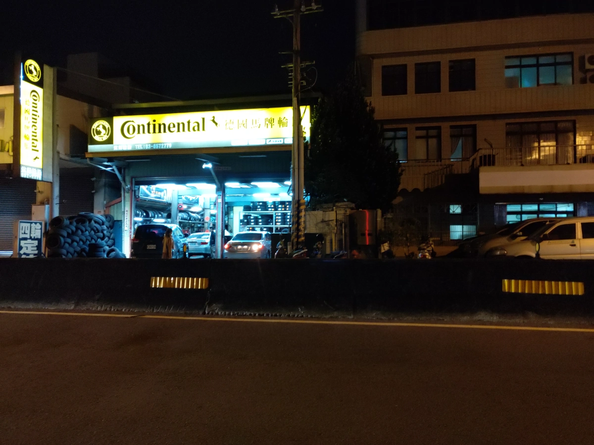
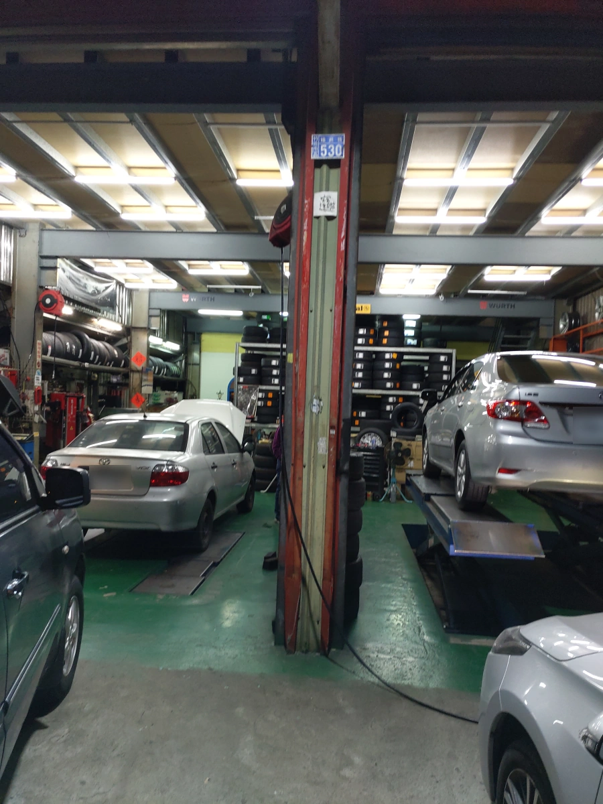

[竹北] 炫鋒輪胎
| 餐廳名稱: | 炫鋒輪胎 |
|---|---|
| 地 址: | 新竹縣竹北市福興路530號 |
| 營業時間: | 週一到週五 09:00~20:00 |
| 週六到週日 09:00~17:00 | |
| 電 話: | 03 657 2779 |
| 0919 579129 |
感謝 炫鋒輪胎!
我的前一台車，十幾年前買的。開到後來，車舊了，輪胎問題都是找炫鋒輪胎處理，他們蠻專業的，價格也合理。
這兩年，換新車了，都有 胎壓警示燈，開了幾千公里後，突然就會亮燈。 特別是碰到寒流，氣體體積收縮，胎壓本來還能多撐幾天的，很容易胎壓警示燈就亮燈了。
每次亮燈，都是開來炫鋒輪胎，他們也不認得我，完全不記得我舊車是找他們處理輪胎， 直接就是免費幫我打氣，讓人家打氣幾次了。雖然炫鋒輪胎是舉手之勞，對他們來說是輕鬆的事， 但也不能不感激人家，無以為報，寫在部落格，幫炫鋒輪胎打廣告。
側面的招牌。 
近看側面與上面的招牌。

從馬路對面照整間店。 
我有接在汽車點菸器的那種輪胎打氣機，但是那個不好用，效率低，必須用千斤頂把汽車架高，輪胎懸空，才能打氣。 專業輪胎行的設備當然不一樣，不用千斤頂，直接打氣，還配有胎壓計，很專業。 
總之，我感謝 炫鋒輪胎! 這是一間專業好店，請大家多捧場，祝福炫鋒輪胎生意興隆。